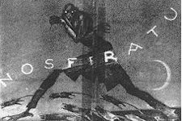

<!DOCTYPE HTML PUBLIC "-//IETF//DTD HTML//EN">
<html>

<head>
<meta http-equiv="PICS-Label" content='(PICS-1.0 "http://www.rsac.org/ratingsv01.html" l gen true comment "RSACi North America Server" by "gorringe@nitrateonline.com" for "http://www.nitrateonline.com" on "1997.01.23T01:07-0500" r (n 0 s 0 v 0 l 0))'>
<meta name="description" content="On August 15, 1926, Rudolph Valentino crashed to the floor of his hotel suite in the Ambassador Hotel, in New York City. He was taken to the Polyclinic Hospital, where, after lapsing in and out of consciousness for a week, the actor died, of endocarditis, septicemia, and complications from the onset of pleurisy, on August 23, at age 31. Although he was visited in the hospital by Joseph Schenck, the president of United Artists, the actor's estranged ex-wife, Natacha Rambova, was in France, where she had resettled after her divorce; Pola Negri, who claimed to be engaged to be married to Valentino, was in Hollywood working on a new film. It was Valentino's valet who helped rush him to the hospital after his collapse">
<meta name="GENERATOR" content="Microsoft FrontPage 4.0">
<meta name="keywords" content="Valentino,Rudolph Valentino,Natacha Rambova,The Son of the Sheik,Four Horsemen of the Apocalypse,Uncharted Seas,Camille,Moran of the Lady Letty,Beyond the Rocks,The Sheik,Salome,The Young Rajah,Blood and Sand,Moran,Monsieur Beaucaire,A Sainted Devil,The Hooded Falcon,Cobra,What Price Beauty?,The Eagle">
<title>Valentino: The Beginnings - Nitrate Online Feature</title>

<meta name="Microsoft Border" content="none, default">
</head>

<body stylesrc="../default.htm" link="#006666" vlink="#006666" alink="#FF0000">


<p align="center"><br>
<a href="../default.htm" target="_top">Contents</a> | <a href="../default.htm#FEATURES" target="_top">Features</a> | <a href="../default.htm#REVIEWS" target="_top">Reviews</a> | <a href="../default.htm#NEWS" target="_top"><font face="Times New Roman">News</font></a> | <a href="../archive.html" target="_top">Archives</a> | <a href="../store.html" target="_top">Store</a></p>

<hr>
<div align="center"><center>

<table border="0" cellpadding="0" cellspacing="0">
  <tr>
    <td></td>
    <td></td>
    <td><p align="center"><strong><big><big>All Our Nosferatus</big></big></strong></p>
    <p align="center"><font size="4"><em><strong>by <a href="../gregory.html" target="_top">Gregory Avery<br>
    </a></strong></em></font><em><font size="1">Posted 29 October 1999</font></em></td>
  </tr>
</table>
</center></div>

<p class="MsoNormal"><span style="mso-fareast-font-family:&quot;MS Mincho&quot;"><span style="mso-spacerun: yes">&nbsp;</span><o:p>
</o:p>
</span></p>
<blockquote>
  <p class="MsoNormal"><span style="mso-fareast-font-family:&quot;MS Mincho&quot;"><font size="5">&quot;<b>A</b></font><font size="4">nd
  when he had crossed the bridge, the shadows came to meet him.&quot; - title
  card from F.W. Murnau's <i>Nosferatu: A Symphony of Terror</i> (1922). <o:p>
  </o:p>
  </font></span></p>
</blockquote>
<p class="MsoNormal"><span style="mso-fareast-font-family:&quot;MS Mincho&quot;">What
a strange and miraculous brew this film turns out to be. Built on the bones of
another, created only to be scorned, it became pursued and hunted, squandering
the fortunes of many in the process, only to split up into multiple guises,
hiding, scouring, until a time when it could be reassembled, reemerge, and
become recognized as a work of art in its own right. It has endured despite the
dust and decay that have overcome many of its contemporaries: Ernst Lubitsch's <i>The
Patriot</i> (1928); Erich von Stroheim's <i>The Devil's Passkey</i> (1920); both
of Theda Bara's signature films,( <i>Cleopatra</i> (1917) and <i>Salome</i>
(1918)); <i>Remodeling Her Husband</i> (1920), in which Dorothy Gish was
directed, for the first and only time, by her sister, Lillian, and gave what
many considered to be her finest performance; D.W. Griffith's <i>The Greatest
Thing in Life</i> (1918), the third of his &quot;war trilogy&quot; films, and
one which might have combated the charges of racism leveled at the director in
later years had it survived. <i>Nosferatu</i> has not only survived, but
continues to astound, and perplex. It is a film that took on a life of its own.
It became something that stubbornly refused to die. <o:p>
</o:p>
<o:p>
</o:p>
</span></p>
<p class="MsoNormal"><span style="mso-fareast-font-family:&quot;MS Mincho&quot;">The
facts about <i>Nosferatu</i> have a way of becoming even more odd and
contradictory the more you dig into them, beginning to caper and gibe at you,
until your head spins from trying to put together the pieces, as if in a fever.
“Nosferatu,” after all, is supposed to derive from the Greek word &quot;nosophoros,"
or, plague bearer. <o:p>
</o:p>
<o:p>
</o:p>
</span></p>
<p class="MsoNormal"><span style="mso-fareast-font-family:&quot;MS Mincho&quot;">It
all started out, as most things do, innocently enough. In 1921, a new German
production company, Prana-Films (&quot;prana&quot; being the Buddhist term for
&quot;breath-of-life&quot;), announced an itinerary of upcoming film
productions, the first being <i>Nosferatu</i>, a film based on the novel <i>Dracula</i>
by Bram Stoker. <i>Nosferatu's</i> screenwriter, Henrik Galeen, stripped the
story down to its bare essentials, changed the characters names and the setting
(to a German coastal town, Wisborg), and relocated the action back to the 1830s.
<o:p>
</o:p>
<o:p>
</o:p>
</span></p>
<p class="MsoNormal"><span style="mso-fareast-font-family:&quot;MS Mincho&quot;">The
estate agent Thomas Hutter (the Jonathan Harker character) is dispatched by his
employer, Knock (the Renfield character), to finalize the sale of a vacant house
in Wisborg to one Count Orlok. Jonathan must go himself to the Count's home in
Transylvania with the papers and deed. The Count happens to see a cameo portrait
of Thomas' wife, Ellen (Harker's fiance Mina, in Stoker's novel), compliments
her on her beauty, and quickly signs the papers.  He then imprisons Thomas in a
room in the castle whose only other access is a window overlooking a ravine.
Thomas manages to escape, barely, with his life, and races back to Wisborg as
the Count transports himself, with several boxes of earth, on-board the ship
&quot;Demeter," which finally docks in Wisborg with all hands dead or missing.
The two marks on the dead captain's neck are mistaken by the city officials as
signs of the plague. Panic sweeps the town as people begin dying, either from
the plague, from vampiric visitations, or both. Thomas reunites with Ellen;
unfortunately, Count Orlok's new residence is located directly across from the
Hutters', and Ellen sees the Count watching her, every night, through her
bedroom window. When she discovers a book in Thomas' baggage, the <i>Book of
Vampires</i> (which Thomas found in his room while staying at an inn during his
first night in Transylvania), she learns that the &quot;nosferatu&quot; can be
destroyed if a woman, &quot;pure in heart," detains him until the first light of
day, when it will be too late for him to escape. This Ellen does, and Count
Orlok, transfixed by the sun shining in through the very window through which he
had earlier terrorized Ellen, disintegrates and vanishes with a trace of smoke. <o:p>
</o:p>
<o:p>
</o:p>
</span></p>
<p class="MsoNormal"><span style="mso-fareast-font-family:&quot;MS Mincho&quot;">To
direct <i>Nosferatu</i>, Prana-Films engaged the services of F.W. Murnau, a
World War-One veteran, who was no stranger to the genre of the &quot;fantastique,"
having recently made a loose film adaptation of <i>Dr. Jekyll and Mr. Hyde</i>,
entitled <i>Der Januskopf</i>, starring Conrad Veidt. To handle the
cinematography, there was Fritz Arno Wagner, who had recently lensed the 1920
remake of <i>The Golem</i>. And the brilliant designer Albin Grau, one of Prana-Film's
co-founders, would do the art direction and come up with the look for the film's
vampire, Count Orlok. <o:p>
</o:p>
<o:p>
</o:p>
</span></p>
<p class="MsoNormal"><span style="mso-fareast-font-family:&quot;MS Mincho&quot;">One
of the unique qualities of <i>Nosferatu</i> is that its vampire is no ordinary
one. The <i>Book of Vampires</i> tells that the first nosferatu came forth
&quot;from the graveyards of the Black Death." The bubonic plague, or Black
Death, swept through Europe, transmitted by fleas carried on the bodies of rats,
during the 14th century, killing a third of the population. <o:p>
</o:p>
<o:p>
</o:p>
</span></p>
<p class="MsoNormal"><span style="mso-fareast-font-family:&quot;MS Mincho&quot;">Count
Orlok was given an elongated look, with a white head, eyes which seem to sit in
his face like glass marbles, long, white, curling fingers, and fangs which are
set, not to the sides like those of a wolf or a bat, but in the center, like
those of a rodent. Rats accompany Orlok on his trip to Wisborg, cached away in
his boxes of earth. Orlok was not just a predatory vampire, but contagion
incarnate, tainting everyone and everything he comes in contact with. <o:p>
</o:p>
<o:p>
</o:p>
</span></p>
<p class="MsoNormal"><span style="mso-fareast-font-family:&quot;MS Mincho&quot;">The
makeup for Orlok was so effective that a legend grew up around the actor, Max
Schreck, who played him. &quot;Schreck&quot; meant &quot;terror&quot; in German.
Could it be a pseudonym? And could someone who looked like that on the screen be
anyone who could be real, who could be even human, at all? <o:p>
</o:p>
<o:p>
</o:p>
</span></p>
<p class="MsoNormal"><span style="mso-fareast-font-family:&quot;MS Mincho&quot;">Max
Schreck was a real person, &quot;Schreck&quot; was his actual last name, and <i>Nosferatu</i>
was his first film appearance. He had started out as a performer on the music
hall stage (something which probably augmented his ability to perform while
wearing heavy makeup), and his naturally cadaverous face (which, off the screen,
could take on the look of a boulevardier) made him an ideal choice for the part.
He continued to work in films during the 1920s and 30s, including an appearance
in the huge U.K.-German co-production, <i>The Tunnel</i>, until his death in
1936. <o:p>
</o:p>
<o:p>
</o:p>
</span></p>
<p class="MsoNormal"><span style="mso-fareast-font-family:&quot;MS Mincho&quot;">The
decision was also made to make the film on exterior locations, an unusual move
for a film in 1922, when most motion picture work was being done in studios. <i>Nosferatu's
</i>film crew went to Czechoslovakia to film the scenes of Thomas' journey into
Transylvania, filming in the Tatra mountains; the castle seen in the film is a
real one, Oravsky Castle, built in the 13th century. Filming was also done in
the German towns of Wismar and Lübeck, before retiring to the stages of the
Jofa studios, in Berlin-Johannistal, for the remainder of filming. Albin Grau
supervised the building of the soundstage sets, and conceived of the elaborate
letter exchanged between Knock and Orlok, which is filled with talismanic
symbols and letterings. (Grau was said to have been an ardent spiritualist, and
possibly a member of a secret society, the &quot;Fraternitas Saturni.") <o:p>
</o:p>
<o:p>
</o:p>
</span></p>
<p class="MsoNormal"><span style="mso-fareast-font-family:&quot;MS Mincho&quot;">Prana-Films
launched an elaborate promotional campaign for <i>Nosferatu, eine Symphonie des
Grauens</i> (the latter part translated as either <i>A Symphony of Horror</i>,
or <i>A Symphony of Terror</i> -- whichever way, you get the message). Posters
appeared showing the film's vampire looking even more grotesque, and more
vermin-like, than he does in the film, with long hook-like fingers and a flurry
of rats eddying at its feet: <o:p>
</o:p>
<o:p>
 </o:p>
</span></p>
<blockquote>
  <p class="MsoNormal"><span style="mso-fareast-font-family:&quot;MS Mincho&quot;">&quot;<i>Nosferatu</i>
  -- who cannot die! <o:p>
  </o:p>
  <o:p>
  </o:p>
  </span></p>
  <p class="MsoNormal"><span style="mso-fareast-font-family:&quot;MS Mincho&quot;">&quot;A
  million fancies strike you when you hear the name: <i>Nosferatu</i>!... <o:p>
  </o:p>
  <o:p>
  </o:p>
  </span></p>
  <p class="MsoNormal"><span style="mso-fareast-font-family:&quot;MS Mincho&quot;">&quot;What
  do you expect of the first showing of this great work? <o:p>
  </o:p>
  <o:p>
  </o:p>
  </span></p>
  <p class="MsoNormal"><span style="mso-fareast-font-family:&quot;MS Mincho&quot;">&quot;Aren't
  you afraid? -- Men must die. But legend has it that a vampire, Nosferatu, 'die
  Untote' [the Undead], lives on men's blood! You want to see a symphony of
  horror? You may expect more. Be careful. <i>Nosferatu</i> is not just fun, not
  something to be taken lightly. Once more: beware.&quot; <o:p>
  </o:p>
  <o:p>
  </o:p>
  </span></p>
</blockquote>
<p class="MsoNormal"><span style="mso-fareast-font-family:&quot;MS Mincho&quot;">In
an issue of the magazine <i>Bühne und Film</i>, Albin Grau further upped the
stakes by relating a story about when he was in the Army and billeted in a
village in Serbia. There, he and some of his fellow soldiers were told the tale
by an old peasant of how the man's father had died, without receiving final
communion, and returned to haunt the village as a vampire. The peasant showed
Grau an official document verifying that, when the father's body was exhumed, it
showed no signs of decomposition -- yet the teeth were strangely elongated, and
protruded from the mouth. After a recitation of the Lord's Prayer, a stake was
driven through the heart of the corpse, which emitted a loud groan, and died. <o:p>
</o:p>
<o:p>
</o:p>
</span></p>
<p class="MsoNormal"><span style="mso-fareast-font-family:&quot;MS Mincho&quot;">Later,
while scouting locations in the Tatra mountains, Grau happened to meet up again
with one of his Army comrades who heard the peasant's story that night. When
told about the new film, Grau's friend said that he would come and see <i>Nosferatu</i>
&quot;even if I were at the other end of the world." <o:p>
</o:p>
<o:p>
</o:p>
</span></p>
<p class="MsoNormal"><i><span style="mso-fareast-font-family:&quot;MS Mincho&quot;">Nosferatu</span></i><span style="mso-fareast-font-family:&quot;MS Mincho&quot;">
premiered, accompanied by a swirling, elaborate, and even hair-raising,
orchestral score composed by Hans Erdmann, at Berlin's Zoo Palast, located right
next door to the municipal zoo, on March 4, 1922. It is not recorded if Grau's
friend was in attendance that evening, but the critical views that were
published the next day were promising. It is difficult, now, with our culture so
steeped in various degrees of vampire lore, to imagine what it must have been
like to see a vampire depicted on the screen for the first time, that night, and
a vampire that would be like no other shown on the screen before or since. Max
Schreck's performance dominates the film, and the actor surely must be given
credit for allowing himself to appear in the picture in so hideous and repellant
a manner. Much of <i>Nosferatu's</i> dramatic power comes from seeing how a
force of evil represented with such physical ugliness bears down upon an
apparently peaceful and benevolent community. Outside of the great Lon Chaney,
few actors have been able to so effectively perform within the confines and
restrictions of makeup and costuming. (Much of Count Orlok's rigor mortis-like
movement comes from the fact that Schreck's costumes were heavily padded.) <o:p>
</o:p>
</span><span style="mso-fareast-font-family:&quot;MS Mincho&quot;"><o:p>
</o:p>
</span></p>
<p class="MsoNormal"><span style="mso-fareast-font-family:&quot;MS Mincho&quot;">Henrik
Galeen's screenplay is written in so direct and terse a style that it reads
almost like blank verse. (&quot;Ellen at the window. She wants to call for help.
She staggers forward. She stops in front of Hutter. One last moment of
indecision...&quot;)  The copy of Galeen's script which Murnau worked from, and
which has been preserved in the archives of the <i>Cinémathèque Française</i>,
shows that he was not afraid to deviate from or amend the screenplay. Pages were
crossed out, concepts of how, for instance, a doorway would appear during an
important scene are sketched around the text, and grids ordering how the shots
for a sequence would appear on the screen are worked out, below or over the
printed page. Murnau does not appear to have been one of those directors who
simply shoots a lot of film, and then tosses it all into the editing room to
work it down into a picture. For one thing, he and the <i>Nosferatu</i> crew
were not working on an elaborate budget, and scenes in Galeen's screenplay
where, for instance, the vampire is depicted as a giant spider clinging to the
outside of Ellen's window were probably eliminated partly for expediency, as
well as for their superfluousness. <o:p>
</o:p>
<o:p>
</o:p>
</span></p>
<p class="MsoNormal"><span style="mso-fareast-font-family:&quot;MS Mincho&quot;">It
was Murnau's idea to have the coach that takes Hutter to Orlok's castle pass
through &quot;a white forest&quot; (which was accomplished by using negative,
rather than positive-print, footage). Almost 20 years before <i>Citizen Kane</i>,
he and Fritz Arno Wagner experimented with deep-focus photography to depict the
rooms of Orlok's castle in daytime, after the &quot;shadows," corporeal and
otherwise, have departed; they also use the same technique to show the long,
long line of pallbearers in the city street, as seen from Ellen's window.
Stop-motion animation was used to depict Orlok's coach moving across the
landscape while actually not moving; and for the scene where Orlok loads his
boxes of earth onto a wagon, loads his coffin on top, climbs in, the coffin's
lid scuttles up over the boxes to cover Orlok, and the driverless horses,
without prompting, proceed to pull the wagon away. <o:p>
</o:p>
<o:p>
</o:p>
</span></p>
<p class="MsoNormal"><span style="mso-fareast-font-family:&quot;MS Mincho&quot;">As
Thomas, Gustav von Wangenheim's performance may seem a little broad or clownish
at times, but Greta Schroeder, as Ellen, with her dark, ringlet hair framing the
face of a Meissen doll, is absolutely convincing as a beautiful, pure, and good
woman in the best sense. One can see why Thomas would come to care for her so
much and readily go to such lengths in the story to try and save her. <o:p>
</o:p>
<o:p>
</o:p>
</span></p>
<p class="MsoNormal"><i><span style="mso-fareast-font-family:&quot;MS Mincho&quot;">Nosferatu</span></i><span style="mso-fareast-font-family:&quot;MS Mincho&quot;">,
then, turns out to be a story about how the true love between two people combats
a formidable, all-consuming figure of malevolence. It should be noted that the
film accomplishes all this through staging, mood and suggestion. Only a single
drop of blood -- when Thomas accidentally cuts his hand while having a late
supper at Orlok's castle -- is shown in the entire picture. <o:p>
</o:p>
</span><span style="mso-fareast-font-family:&quot;MS Mincho&quot;"><o:p>
</o:p>
</span></p>
<p class="MsoNormal"><i><span style="mso-fareast-font-family:&quot;MS Mincho&quot;">Nosferatu</span></i><span style="mso-fareast-font-family:&quot;MS Mincho&quot;">
would probably have been a great success at the box office except for two
things. Prana-Films had spent so much on promoting the film that records would
later show that their publicity campaign cost more than the making of the actual
film itself. And, as Lotte Eisner wrote, in &quot;a Germany isolated from the
rest of the world it wasn't considered necessary to buy the adaptation rights."</span></p>

<hr>

<ul>
  <li><a href="fnosferatu.html" target="_top">Main Page</a> ...</li>
  <li>All Our Nosferatus ...</li>
  <li><a href="fnosferatu2.html" target="_top">Nosferatu Arrives in America</a> ...</li>
  <li><a href="fnosferatu3.html" target="_top">Modern Nosferatu</a> ...</li>
</ul>

<hr>

<p align="center"><a href="../default.htm" target="_top">Contents</a> | <a href="../default.htm#FEATURES" target="_top">Features</a> | <a href="../default.htm#REVIEWS" target="_top">Reviews</a>
| <a href="../default.htm#NEWS" target="_top"><font face="Times New Roman">News</font></a> | <a href="../archive.html" target="_top">Archives</a> | <a href="../store.html" target="_top">Store</a><br>
<font size="1"><em>Copyright © 1999 by Nitrate Productions, Inc. All Rights Reserved.</em></font> 


</body>
</html>
